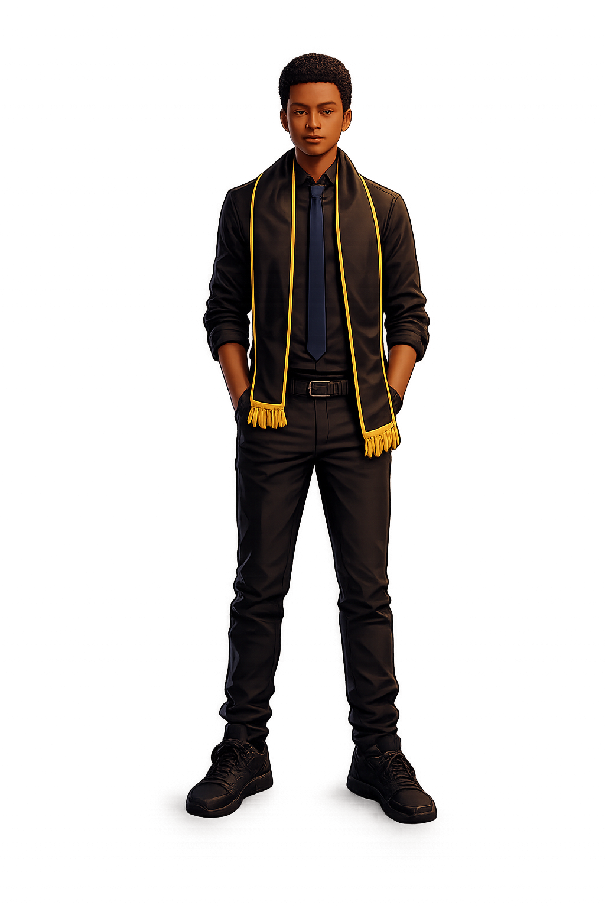

   <div class="scene-wrap" [attr.data-section]="activeSection()">
 
      <!-- Canvas for particles -->
      <canvas #particleCanvas class="scene-canvas" aria-hidden="true"></canvas>
 
      <!-- Background environment layers -->
      <div class="scene-bg" [style.--accent]="config().accentColor">
        <div class="scene-bg__gradient"></div>
        <div class="scene-bg__grid" aria-hidden="true"></div>
        <div class="scene-bg__glow" aria-hidden="true"></div>
        <div class="scene-bg__vignette" aria-hidden="true"></div>
      </div>
 
      <!-- Floating tech nodes -->
      <div class="scene-nodes" aria-hidden="true">
        @for (node of visibleNodes(); track node; let i = $index) {
          <div
            class="scene-node"
            [style.--i]="i"
            [style.--accent]="config().accentColor"
          >{{ node }}</div>
        }
      </div>
 
      <!-- Portrait -->
      <div class="scene-portrait"
        [attr.data-pose]="config().pose"
        [class.scene-portrait--transitioning]="transitioning()">
 
        <!-- Glow ring behind portrait -->
        <div class="portrait-halo" [style.--accent]="config().accentColor" aria-hidden="true"></div>
 
        <!-- Floor reflection -->
        <div class="portrait-floor" aria-hidden="true"></div>
 
        <!-- The image -->
        <div class="portrait-frame">
          
 
          <!-- Overlay lighting per section -->
          <div class="portrait-light" [style.--accent]="config().accentColor" aria-hidden="true"></div>
        </div>
 
        <!-- Idle breathing overlay — always present -->
        <div class="portrait-breathe" aria-hidden="true"></div>
      </div>
 
      <!-- Section label -->
      <div class="scene-label" [style.--accent]="config().accentColor">
        <span class="scene-label__dot"></span>
        {{ config().label }}
      </div>
 
      <!-- Bottom ambient bar -->
      <div class="scene-ambient" [style.--accent]="config().accentColor" aria-hidden="true"></div>
    </div>